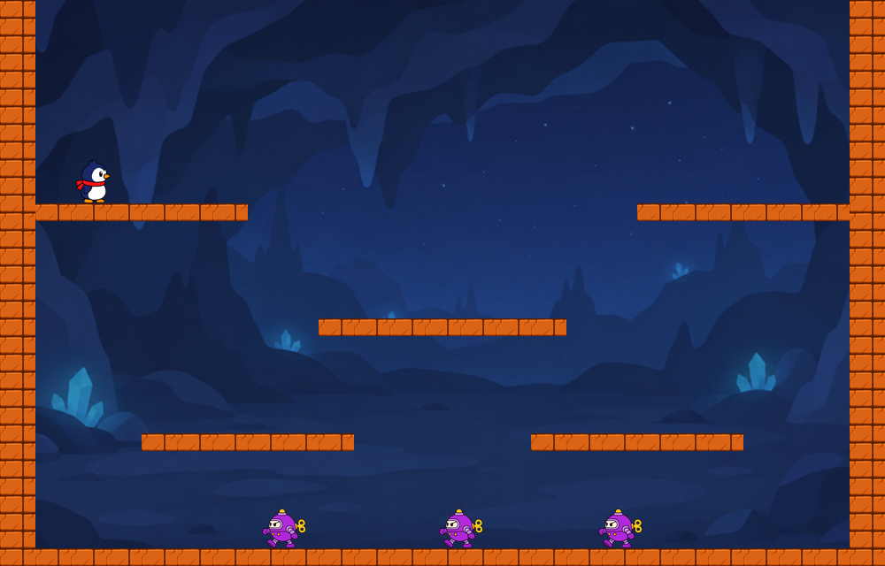

14장. 배경음악
13장에서는 갇힌 적군을 모두 터트리면 화면에 CLEAR!를 표시했습니다. 이번 장에서는 게임을 실행할 때 배경음악을 재생합니다. 음악이 끝나면 처음부터 다시 재생되도록 만듭니다.
화면에는 전처럼 펭귄과 적군이 나타납니다. 이번 장에서 달라지는 부분은 소리이므로, 완성한 뒤 직접 실행해서 들어야 합니다.
14-1 배경음악 반복 재생하기
소리 파일을 열고 재생을 준비하는 코드를 Sound 클래스로 묶습니다. 파일 경로를 전달받아 소리를 준비하도록 만듭니다. 다음 장의 게임오버 소리에도 같은 클래스를 사용할 수 있습니다.
Java에서 짧은 소리를 메모리에 읽어 두고 재생할 때는 클립(Clip)을 사용합니다. 이번에는 제공받은 sound/bgm.wav를 클립에 읽어 들인 뒤 반복해서 재생합니다.
소리 클래스와 재생 코드 추가하기
src/bubble/game에 Sound.java를 새로 만듭니다. 이어서 BubbleFrame.java의 생성자에 배경음악을 준비하고 반복 재생하는 코드를 추가합니다. Timer를 시작하는 줄 다음, pack()을 호출하기 전에 넣습니다.
새 파일: src/bubble/game/Sound.java
수정 파일: src/bubble/game/BubbleFrame.java
package bubble.game;import java.io.File;import javax.sound.sampled.AudioInputStream;import javax.sound.sampled.AudioSystem;import javax.sound.sampled.Clip;public class Sound { private Clip clip; public Sound(String file) { try { AudioInputStream stream = AudioSystem.getAudioInputStream(new File(file)); clip = AudioSystem.getClip(); clip.open(stream); } catch (Exception e) { e.printStackTrace(); } } public void loop() { if (clip != null) { clip.loop(Clip.LOOP_CONTINUOUSLY); } }} new Timer(16, e -> tick()).start(); Sound bgm = new Sound("sound/bgm.wav"); bgm.loop(); pack(); setResizable(false); setLocationRelativeTo(null);Sound의 생성자는 소리 파일의 경로를 받습니다. new Sound("sound/bgm.wav")를 실행하면 해당 파일을 열고 재생할 클립을 준비합니다. 생성자에서는 재생 준비까지만 하고, 실제 반복 재생은 loop()에서 시작합니다.
sound/bgm.wav는 실행할 때의 작업 폴더를 기준으로 찾는 상대 경로입니다. 앞 장과 같은 실행 설정을 사용합니다. bubble 프로젝트의 sound 폴더에 제공받은 bgm.wav가 있는지 확인합니다. 이 파일은 src/bubble/game에 넣지 않습니다.
파일을 열어 클립에 읽어 들이기
AudioSystem.getAudioInputStream(new File(file))은 지정한 파일을 열어 오디오 입력 스트림(AudioInputStream)을 만듭니다. 오디오 입력 스트림은 파일의 소리 데이터를 읽어 들이는 통로입니다.
이어서 AudioSystem.getClip()으로 재생에 사용할 클립을 얻습니다. clip.open(stream)은 입력 스트림에서 소리 데이터를 읽어 클립에 담습니다. 이 과정이 끝나면 클립을 재생할 준비가 됩니다.
파일을 여는 일은 실패할 수 있으므로 생성자에서 try와 catch로 감쌉니다. 파일을 찾지 못하거나 소리 형식을 지원하지 않으면 catch로 넘어갑니다. e.printStackTrace()는 예외 내용과 발생 위치를 콘솔에 출력합니다.
음악이 끝나면 처음부터 다시 재생하기
Sound의 loop()는 준비한 클립에 clip.loop(Clip.LOOP_CONTINUOUSLY)를 호출합니다. Clip.LOOP_CONTINUOUSLY는 반복 횟수를 제한하지 않는다는 뜻입니다. 재생을 시작한 뒤 음악이 끝에 도달하면 처음으로 돌아가 계속 재생합니다.
앞의 if (clip != null)은 클립을 얻었는지 확인하는 조건입니다. 파일을 열거나 클립을 얻는 도중 예외가 나면 clip이 null로 남을 수 있습니다. 이 조건은 clip이 null인 상태에서 clip.loop()를 호출하는 일을 막습니다. 다만 클립을 얻은 뒤 open()에서 실패할 수도 있습니다. 따라서 clip이 null이 아니어도 재생 준비가 끝났다고 보장하지는 않습니다. 소리가 나지 않으면 콘솔의 예외 내용을 확인해야 합니다.
BubbleFrame에서는 Sound bgm = new Sound("sound/bgm.wav")로 배경음악을 준비합니다. 바로 다음의 bgm.loop()가 반복 재생을 시작합니다.
클립이 재생되는 동안에도 다음 코드는 계속 실행됩니다. 음악이 끝나기를 기다리지 않고 pack() 등 창을 완성하는 코드가 이어서 실행됩니다. 배경음악을 반복하려고 게임 루프인 tick()에 재생 코드를 넣거나 별도의 Timer를 만들 필요는 없습니다.
게임을 실행해 배경음악 듣기
BubbleFrame을 Run As → Java Application으로 실행합니다. 게임 창이 뜨면 배경음악이 들립니다. 펭귄을 움직이거나 물방울을 쏘는 동안에도 음악은 계속 재생됩니다.
실행 결과

화면 구성은 앞 장과 같습니다. 펭귄과 적군이 보이고, 기존의 이동과 물방울 발사도 그대로 동작합니다. 사진에는 소리가 담기지 않으므로 직접 실행해서 음악이 한 번 끝날 때까지 기다려 봅니다. 끝난 뒤 처음 부분이 다시 들리면 반복 재생이 동작한 것입니다.
소리가 들리지 않으면 콘솔에 예외가 출력되었는지 먼저 확인합니다. 파일을 찾지 못했다면 실행할 때의 작업 폴더와 sound/bgm.wav의 위치를 확인합니다. 예외가 없다면 컴퓨터의 음량과 소리 출력 장치를 확인합니다.
14장 완성 코드 보관하기
배경음악이 반복되는 것을 확인했으면 src/bubble/game의 완성 코드를 ex14에 복사합니다. 복사한 클래스의 패키지 선언은 package bubble.ex14;로 맞춥니다. 다음 장에서는 src/bubble/game의 코드를 이어서 수정합니다.